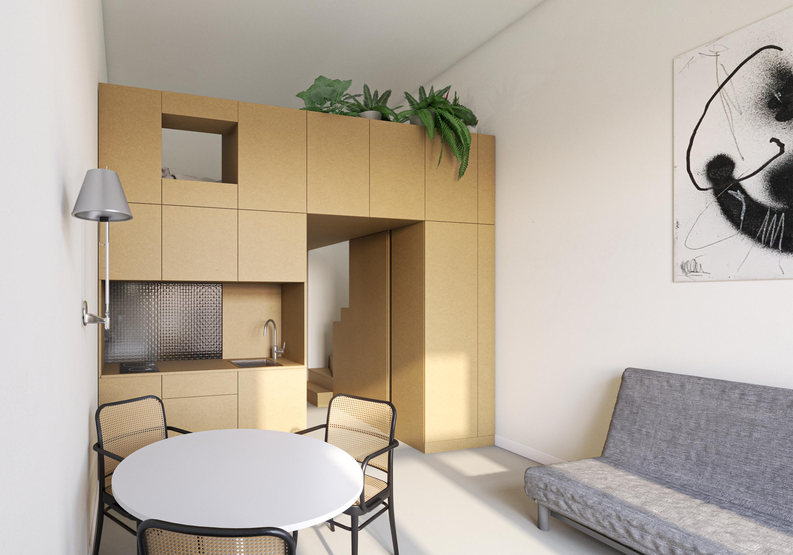
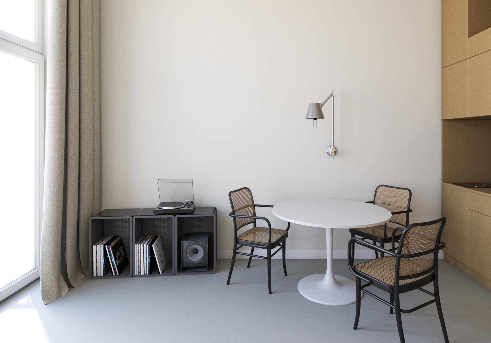
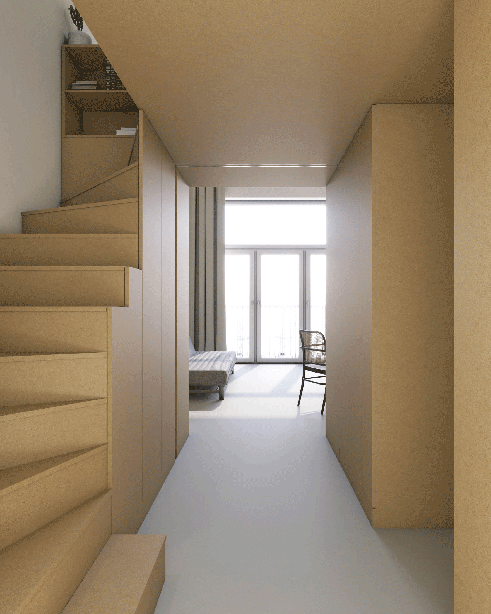
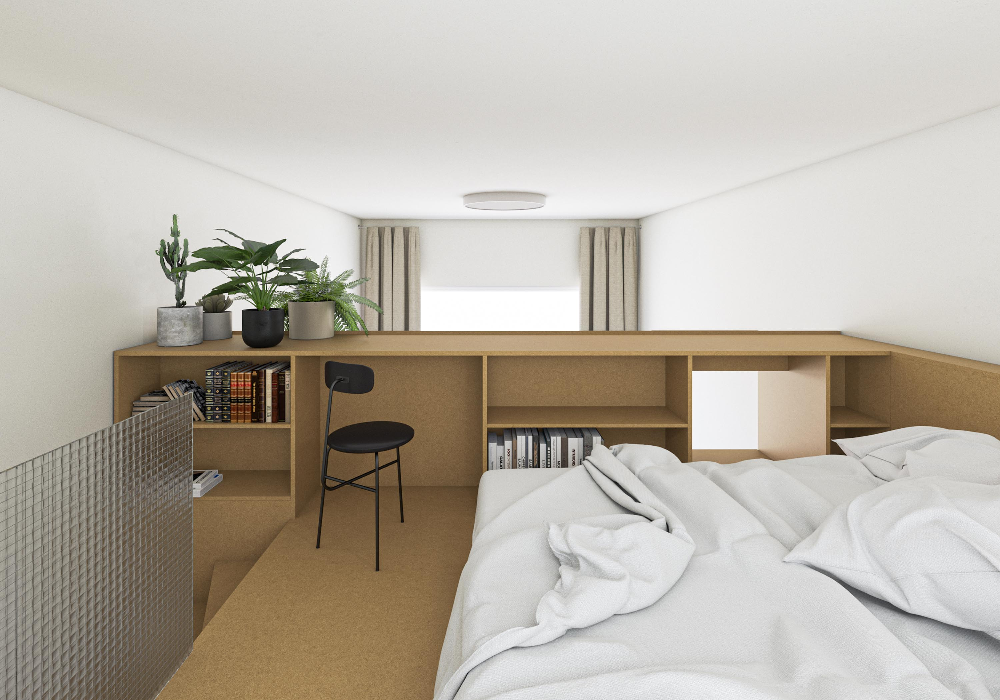
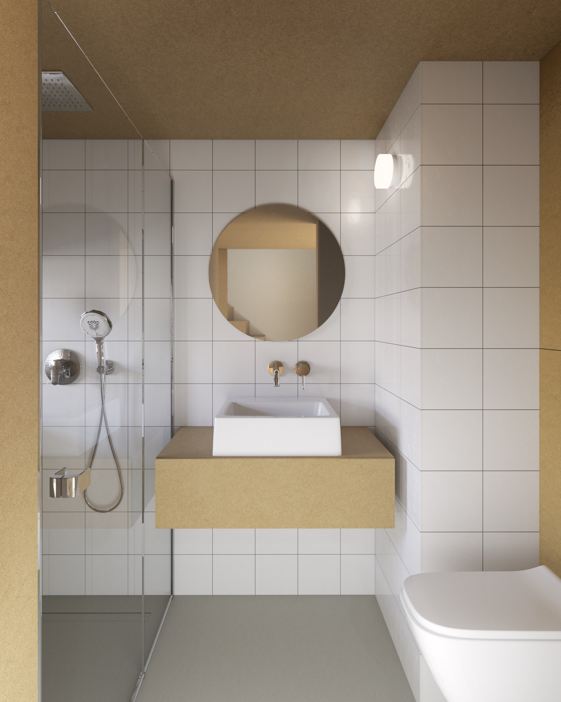
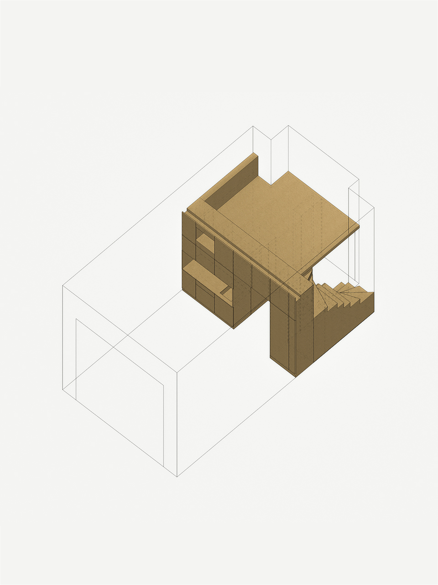

Aranżacja mikromieszkania
 Pomysł na organizację mieszkania oparł się o specjalnie zaprojektowany wielofunkcyjny blok meblowy. Mebel inspirowany klasyczną polską meblościanką wydziela w mieszkaniu różnorodne kameralne wnętrza.
Od korytarza z miejscem do przechowywania, przez łazienkę pod antresolą, sypialnię umieszczoną wyżej, aż po przestronny salon z aneksem kuchennym – otwarty na jego swobodne urządzenie meblami pozbieranymi z różnych miejsc i czasów.
 Jakub Szczęsny, twórca domu Kereta, napisał, że "to projekt, który ujmuje materiałową skromnością i pomysłem na schody zgrabnie wpasowane w strefę w głębi traktu, stanowiąc świetne tło dla przyszłego życia i towarzyszących mu przedmiotów".
- Współpraca:
Domi Matuszewska koncepcja
Mania Łukaszewska grafika na ścianie - Wrocław, 2019
- Projekt konkursowy
- Lista projektów